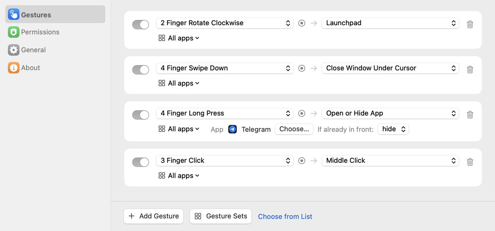
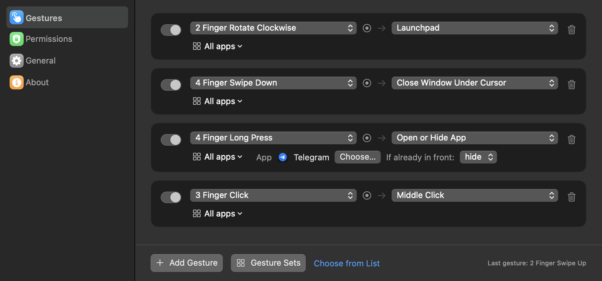
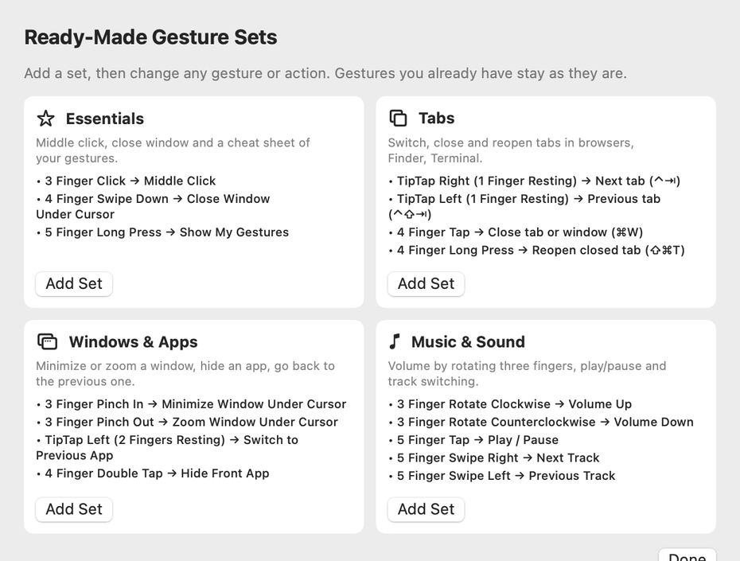
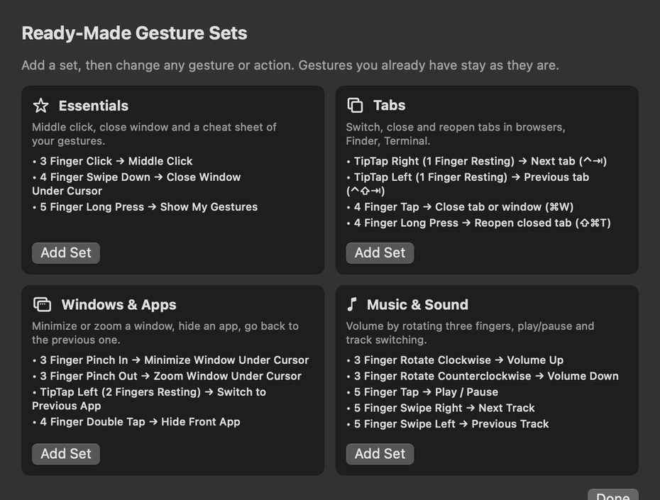

Your trackpad can do more.
Tapko turns taps, swipes, pinches and holds into the things you do all day. Middle click, close a window, open Telegram. In every app.
7 days of Pro free · macOS 14 Sonoma or later · Built-in trackpad and Magic Trackpad

One gesture, one less click.
A few of the gestures people set up first.
Small app. Lots of reach.
Tapko lives in the menu bar and stays out of the way until your fingers ask for something.
Gestures
Clicks, taps, double taps, swipes, pinches, rotations, long presses, TipTaps, corner taps and swipes from the edge.
Actions
Middle click, close, minimize or zoom the window under the cursor, any keyboard shortcut, open or hide an app, Mission Control, media keys, Shortcuts, AppleScript.
Record a gesture
Click Add Gesture and make it on the trackpad. Tapko shows what it recognized before anything runs.
Per-app rules
The same gesture can close a tab in Safari and send a message in Telegram.
Shortcut suggestions
Tapko reads the menus of your apps and offers their keyboard shortcuts, so you don't have to remember them.
Private by design
Everything runs on your Mac. No account, no tracking, no data sent anywhere.
Ready in a minute.
Start with a ready-made set or build your own.
Install and allow
Move Tapko to Applications and turn it on in Privacy & Security → Accessibility.
Pick a set
Essentials, Tabs, Windows and Apps, or Music and Sound. Change anything you like.
Just use it
Forgot a gesture? A five finger hold shows all of yours on screen.


Free to start. Pro to keep going.
Try every Pro feature free for 7 days. Then pay once, or keep the free version.
Free
- 7 days of Pro included
- Then 2 gestures at a time
- All 26 actions
- Ready-made sets
- 11 languages
Questions
Why does Tapko need Accessibility access?
To click, press keys and close windows for you, macOS requires the Accessibility permission. Tapko uses it only to run the actions you set up.
macOS says it can't verify Tapko. What do I do?
Tapko isn't distributed through the App Store. The first time you open it, macOS may block it. Open System Settings → Privacy & Security, scroll down and click Open Anyway. You only do this once; updates install without it.
Will it clash with the system gestures?
Tapko warns you when a gesture is also used by macOS, for example a three finger swipe, and opens the trackpad settings so you can turn the system one off.
Is there a free trial?
Yes. Every new install gets all Pro features for 7 days, with no key or card needed. After that Tapko keeps working as the free version with 2 gestures, unless you buy Pro.
How do I activate Pro?
After you buy, you get a license key by email. Paste it in Tapko → Settings → About.
Can I get a refund?
Yes. If Tapko doesn't work for you, write within 14 days of purchase and you'll get your money back.